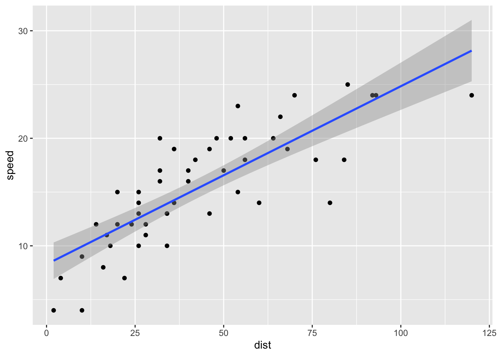
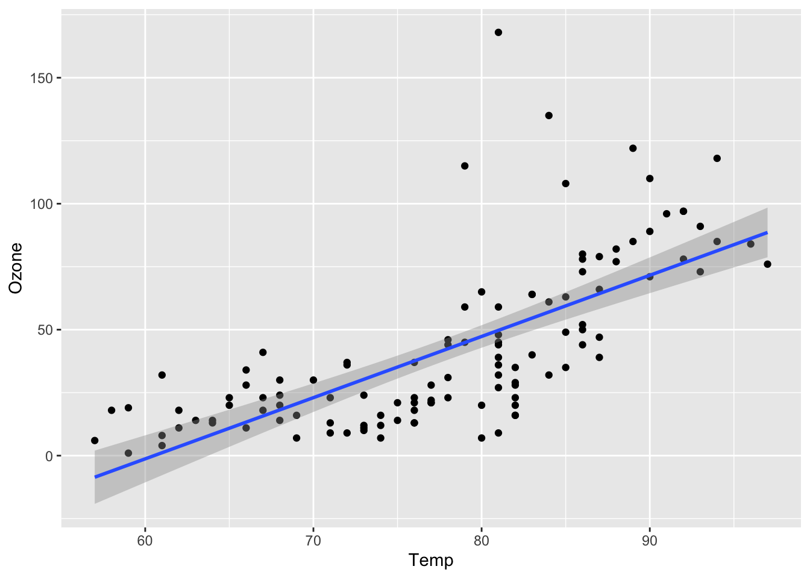
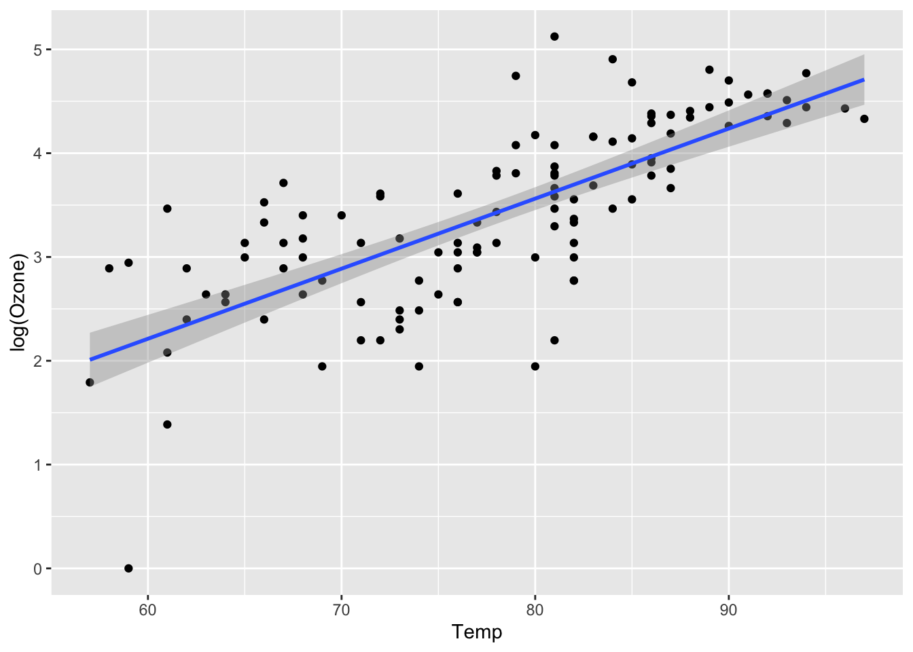

Chapter 9 Fitting a linear model in R
To illustrate fitting a linear model in R, for convenience we’ll use one of R’s built in data sets: cars
head(cars)## speed dist
## 1 4 2
## 2 4 10
## 3 7 4
## 4 7 22
## 5 8 16
## 6 9 10Our dependent variable (dist) is the stopping distance in feet, and the independent variable is (speed) is the speed in miles per hour. The cars are very old (1920s!), but it’s a convenient data set for illustrating the linear modelling syntax.
The basic syntax is
lm(formula, data )where the formula argument corresponds to the equation for \(E(Y_i)\) and uses column names from the data frame specified by the data argument. Some formula examples are as follows.
| Model | formula |
|---|---|
| \(Y_i = \beta_0 + \varepsilon_i\) | dist ~ 1 |
| \(Y_i = \beta_0 + \beta_1 x_i+ \varepsilon_i\) | dist ~ speed |
| \(Y_i = \beta_0 + \beta_1 x_i+ \beta_2 x_i^2+\varepsilon_i\) | dist ~ speed + I(speed^2) |
| \(Y_i = \beta_0 + \beta_1 \log x_i+\varepsilon_i\) | dist ~ log(speed) |
For example, to fit the simple linear regression model we do
lm(dist ~ speed, cars)##
## Call:
## lm(formula = dist ~ speed, data = cars)
##
## Coefficients:
## (Intercept) speed
## -17.579 3.932and from the Coefficients output we read off \(\hat{\beta}_0= -17.579\) and \(\hat{\beta}_1 = 3.932\).
9.1 Plotting a fitted regression line
Regression lines can be plotted using the geom_smooth() command in ggplot2:
ggplot(cars, aes(x = dist, y = speed)) +
geom_point() +
geom_smooth(method = "lm", formula = "y ~ x")
(We did this in semester 1 - now you know how the blue line is obtained! We’re not going to study the details here, but the grey shaded region indicates, point-wise, 95% confidence intervals for \(E(Y)\) for each possible \(x\); the region indicates uncertainty in the fitted regression line.)
9.2 The summary() command
The summary command will give us more information about our model fit, if we first assign the fitted model to a variable. Although we will not cover hypothesis testing for linear models in this module, the summary() command does report some hypothesis tests, and we will describe these briefly.
For example:
lmCars <- lm(dist ~ speed, cars)
summary(lmCars)##
## Call:
## lm(formula = dist ~ speed, data = cars)
##
## Residuals:
## Min 1Q Median 3Q Max
## -29.069 -9.525 -2.272 9.215 43.201
##
## Coefficients:
## Estimate Std. Error t value Pr(>|t|)
## (Intercept) -17.5791 6.7584 -2.601 0.0123 *
## speed 3.9324 0.4155 9.464 1.49e-12 ***
## ---
## Signif. codes: 0 '***' 0.001 '**' 0.01 '*' 0.05 '.' 0.1 ' ' 1
##
## Residual standard error: 15.38 on 48 degrees of freedom
## Multiple R-squared: 0.6511, Adjusted R-squared: 0.6438
## F-statistic: 89.57 on 1 and 48 DF, p-value: 1.49e-12We interpret the output as follows.
Residualsrefer to those residuals we defined previously: \(e_i = y_i - \hat{y}_i\).The
Estimatecolumn gives the least squares estimate.The
Std. Errorcolumn gives the estimated standard error for each least squares estimate.The
t valueandPr(>|t|)refer to a hypothesis test that the corresponding model parameter is 0. For example, in thespeed rowthe hypotheses are \[ H_0: \beta_1 = 0, \quad H_A: \beta_1 \neq 0. \] For reference, the test statistic is the least squares estimate, divided by its estimated standard error, and this is compared with a \(t_{n-p}\) distribution, where \(n\) is the number of observations, and \(p\) is the length of the parameter vector \(\boldsymbol{\beta}\)The residual standard error is the estimated value \(\hat{\sigma}\) of \(\sigma\) (standard deviation of the errors, not the variance). Recall that this is computed using the residual sum of squares: \(\hat{\sigma}^2 = \mathbf{e}^T\mathbf{e}/(n-p)\)
The
Multiple R-squaredandAdjusted R-squaredboth report how ‘useful’ the model is for predicting the dependent variable: they report the proportion of the variation in \(y_1,\ldots,y_n\) that can be explained by variation in the dependent variables. TheAdjusted R-squaredcorrects for the number of independent variables in the model.The
F-statisticandp-valuereport a test of the hypothesis that all elements of the parameter vector \(\boldsymbol{\beta}\) are zero, except for the parameter corresponding to the intercept. This tests the hypothesis that none of the independent variables are related to the dependent variable.
Example 9.1 (Fitting a linear model in R: election example.)
Using the airquality data
head(airquality)## Ozone Solar.R Wind Temp Month Day
## 1 41 190 7.4 67 5 1
## 2 36 118 8.0 72 5 2
## 3 12 149 12.6 74 5 3
## 4 18 313 11.5 62 5 4
## 5 NA NA 14.3 56 5 5
## 6 28 NA 14.9 66 5 6fit the simple linear regression model in R, with Ozone as the dependent variable and Temp as the independent variable. Obtain the parameter estimates, including the estimated error variance. Produce a scatter plot of the data in R, and add the fitted regression line. Try the plot and fitted regression line in which log of Ozone is the dependent variable.
Solution
The model is \[ Y_i = \beta_0 + \beta_1x_i + \varepsilon_i, \] where \(Y_i\) is the ozone concentration for the \(i\)-th observation, \(x_i\) is the corresponding temperature, and \(\varepsilon_i \sim N(0,\sigma^2)\). We fit the model with the command
lmAirQuality <- lm(Ozone ~ Temp, airquality)To get all the parameter estimates, we do
summary(lmAirQuality)##
## Call:
## lm(formula = Ozone ~ Temp, data = airquality)
##
## Residuals:
## Min 1Q Median 3Q Max
## -40.729 -17.409 -0.587 11.306 118.271
##
## Coefficients:
## Estimate Std. Error t value Pr(>|t|)
## (Intercept) -146.9955 18.2872 -8.038 9.37e-13 ***
## Temp 2.4287 0.2331 10.418 < 2e-16 ***
## ---
## Signif. codes: 0 '***' 0.001 '**' 0.01 '*' 0.05 '.' 0.1 ' ' 1
##
## Residual standard error: 23.71 on 114 degrees of freedom
## (37 observations deleted due to missingness)
## Multiple R-squared: 0.4877, Adjusted R-squared: 0.4832
## F-statistic: 108.5 on 1 and 114 DF, p-value: < 2.2e-16so we have \(\hat{\beta}_0 = -146.9955\), \(\hat{\beta}_1 = 2.4287\) and \(\hat{\sigma} = 23.71\).
To produce the plot, we do
ggplot(lmAirQuality, aes(x = Temp, y = Ozone)) +
geom_point() +
geom_smooth(method = "lm", formula = y ~ x) We can see the fitted regression line dipping below 0, so perhaps log ozone concentration is a better choice for the dependent variable:
ggplot(lmAirQuality, aes(x = Temp, y = log(Ozone))) +
geom_point() +
geom_smooth(method = "lm", formula = y ~ x)
We note one outlier, but otherwise this is perhaps a better fit. To fit this with the lm command, we just do
lm(log(Ozone) ~ Temp, airquality)##
## Call:
## lm(formula = log(Ozone) ~ Temp, data = airquality)
##
## Coefficients:
## (Intercept) Temp
## -1.8380 0.0675